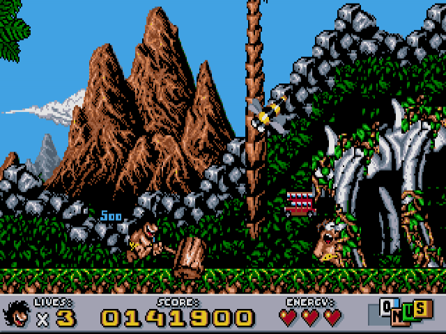
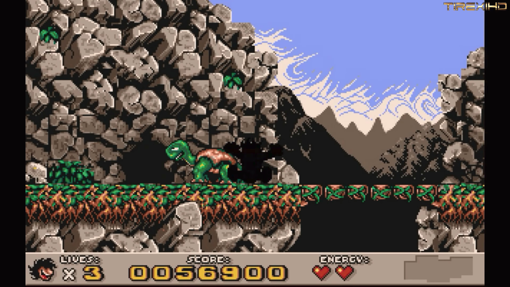

Hra Prehistorik 2 je klasická plošinovka z roku 1993, kterou vytvořila francouzská společnost Titus Interactive. Navazuje na úspěch prvního dílu a přináší hráčům zábavné dobrodružství v roli pračlověka, který se snaží přežít v drsném pravěku. Hlavním cílem je sbírat jídlo, bojovat s nepřáteli a překonávat překážky v rozmanitých prostředích, jako jsou jeskyně, lesy nebo zasněžené hory. Hra se vyznačuje barevnou grafikou, humornými animacemi a jednoduchým, ale návykovým herním systémem. Oproti prvnímu dílu nabízí více úrovní, lepší ovládání a propracovanější design map. Prehistorik 2 se stal oblíbenou retro klasikou, kterou si hráči dodnes připomínají díky jejímu originálnímu stylu a zábavnému pojetí pravěku.
